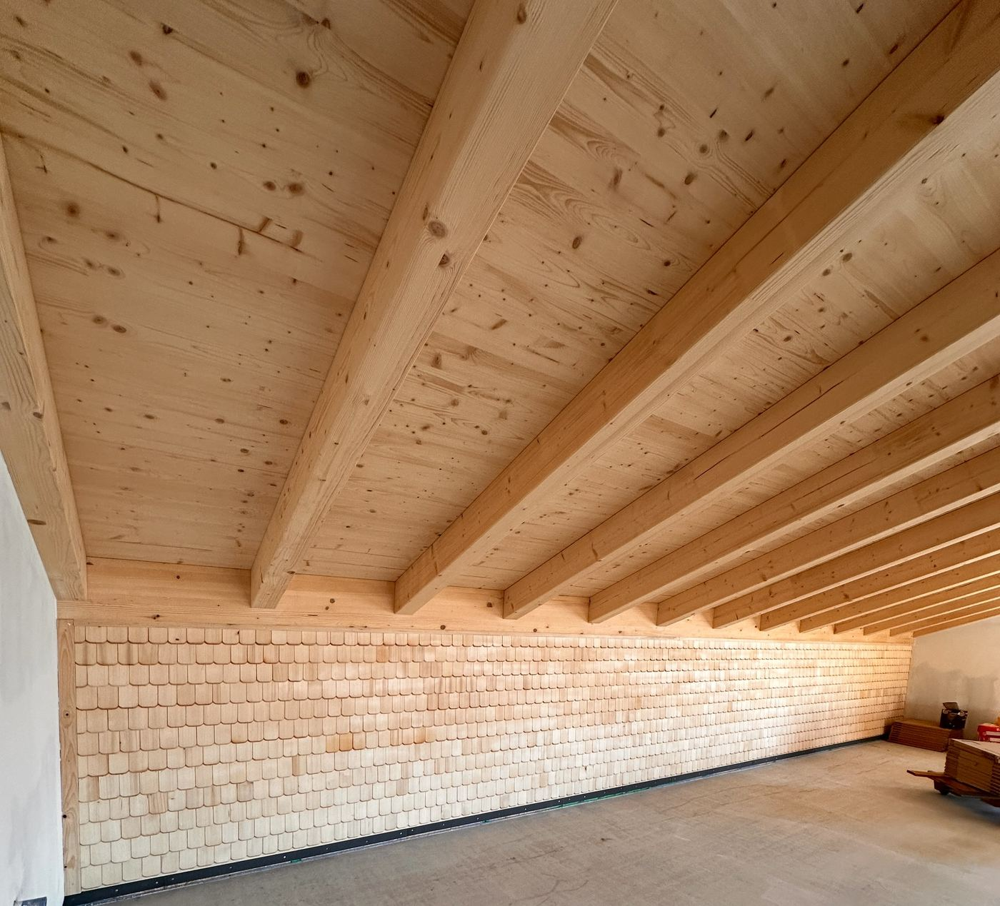

Ab 7. November in Deckenpfronn
Unser Hofladen. Mit Café. Direkt am Hühnerhof.
Frische Eier von unseren Legehennen, regionale Lebensmittel und der ein oder andere Kaffee mit uns – in unserem neuen Haus aus Holz.
–Tage bis zur Eröffnung am Samstag, 7. November


Eröffnung am 7. November
Samstag von 10 bis 17 Uhr. Zur Eröffnung gibt es Aperol Spritz für 5 € und Spiegeleibrot.
Anfahrt- Ab 9. November
- Mo, Di, Do, Fr
- 9–12 und 14.30–17.30 Uhr
- Mittwoch
- Ruhetag
- Samstag
- 9–12 Uhr


Im Hofladen
Direkt von unserem Legehennenbetrieb
Frische Eier und regionale Produkte – manches von unserem Hof, vieles von Erzeugern aus der Umgebung. So sah unser Sortiment bisher im Hofbus und auf den Märkten aus:
- Eier
- Eierlikör aus eigener Herstellung
- Äpfel und Birnen vom eigenen Baum
- Nudeln, Linsen und Mehl
- Honig und Marmelade
- Wurst, Fleisch und Käse
- Obst und Gemüse
- Brot, Wein und Eis


Im Hofcafé
Auf einen Kaffee am Hof
Viel Holz und große Fenster: Im neuen Haus haben wir Platz für ein Café geschaffen. Die Espressomaschine ist schon eingezogen.
Wie das Haus entstanden istAußerdem
Ihr findet uns auch unterwegs

Rund um die Uhr offen: unser SB-Lädle in der Calwer Straße 27/1.